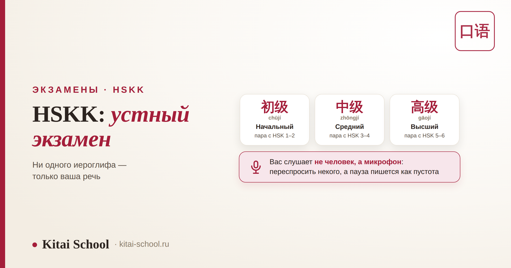
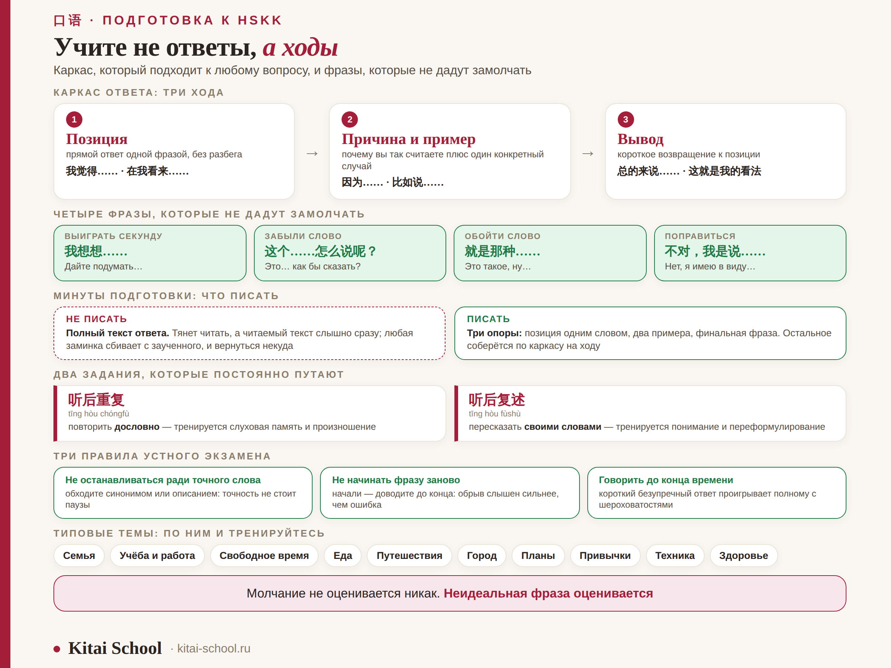

Экзамены · HSKK
HSKK: как подготовиться к устному экзамену по китайскому


На HSKK не пишут ни одного иероглифа. Здесь вы просто говорите — в микрофон, по таймеру, вместе с полным залом таких же говорящих. И именно поэтому он ломает людей, которые спокойно берут письменный HSK: там можно вернуться к заданию и подумать, а тут тишина в записи не отматывается. Разберём, как устроен экзамен, по какому каркасу собирать ответ за минуту подготовки, какие фразы вытаскивают, когда слово вылетело из головы, и почему на устном экзамене уверенная простая речь выигрывает у безупречной, но запинающейся.
HSKK — отдельный экзамен со своим сертификатом, три уровня: 初级, 中级, 高级. Вас слушает не человек, а микрофон: переспросить некого, а пауза записывается как пустота. Ответ собирается по каркасу из трёх ходов: позиция → причина с примером → вывод. За минуты подготовки пишут не текст, а три опоры. И главное правило устного экзамена: лучше проще, но без остановки, чем точнее, но с двадцатисекундной паузой.
Что такое HSKK и как он устроен
Полное название — 汉语水平口语考试 (Hànyǔ Shuǐpíng Kǒuyǔ Kǎoshì), «экзамен на уровень устного китайского». Это не часть HSK, а самостоятельный экзамен: отдельная регистрация, отдельный сертификат, три уровня вместо шести.
| Уровень | Пара с HSK | Лексика | Части экзамена |
|---|---|---|---|
| 初级 начальный | HSK 1–2 | около 200 слов | 听后重复 · 听后回答 · 回答问题 |
| 中级 средний | HSK 3–4 | около 900 слов | 听后重复 · 看图说话 · 回答问题 |
| 高级 высший | HSK 5–6 | около 3000 слов | 听后复述 · 朗读 · 回答问题 |
Общая логика одинаковая на всех уровнях: сначала работа с услышанным, потом самостоятельное высказывание. Экзамен идёт примерно двадцать минут, и часть этого времени — подготовка, а не говорение: на 初级 около семи минут, на 中级 и 高级 около десяти.
Соответствие уровням HSK — ориентир, а не правило. Устная речь почти у всех отстаёт от чтения, и человек с уверенным HSK 4 вполне может не вытянуть 中级 без отдельной подготовки. Смотреть надо не на свой уровень HSK, а на то, можете ли вы говорить связно минуту без остановки. И ещё: формат HSKK, как и HSK, пересматривается — состав частей и требования для вашей даты сверяйте на официальном сайте экзамена.
Вас слушает не человек, а микрофон
Это главное, к чему невозможно подготовиться теоретически, но можно привыкнуть заранее. HSKK — не собеседование. Никто не кивает, не помогает наводящим вопросом и не ждёт, пока вы соберётесь.
| На экзамене | Что это меняет для вас |
|---|---|
| Переспросить некого | задание звучит один раз; не поняли — отвечаете по тому, что уловили, а не молчите |
| Пауза пишется как пустота | двадцать секунд молчания — это двадцать секунд без единого балла |
| Нет обратной связи | вы не видите, понимают ли вас, и легко решить, что говорите плохо, когда всё нормально |
| Вокруг говорят все сразу | чужие голоса сбивают; к этому привыкают только тренировкой в шуме |
| Таймер не двигается | отведённое время нельзя растянуть: не успели — оборвётся на полуслове |
Практический вывод: тренироваться нужно с включённой записью, а не просто говорить вслух. Разница огромная. Микрофон беспощадно показывает то, чего вы за собой не слышите: паузы-заполнители, обрывы на середине фразы и места, где вы каждый раз спотыкаетесь.
Каркас ответа: три хода, которые работают всегда
Самая частая проблема на 回答问题 — не незнание слов, а то, что человек не знает, чем заполнить минуту. Каркас снимает эту проблему: он один и тот же для любого вопроса.
| Ход | Что говорите | Чем начать |
|---|---|---|
| 1. Позиция | прямой ответ одной фразой, без разбега | 我觉得…… · 对我来说…… · 在我看来…… |
| 2. Причина и пример | почему вы так считаете плюс один конкретный случай | 因为…… · 比如说…… · 举个例子…… |
| 3. Вывод | короткое возвращение к позиции | 总的来说…… · 这就是我的看法 |
Работает это потому, что каждый ход тянет за собой следующий: сказали позицию — язык сам просит «потому что», сказали причину — просится пример. Три простых предложения по схеме звучат лучше, чем одно сложное, оборванное на середине.

Из личного опыта
Свой первый устный экзамен я готовила как письменный: расписала полные ответы на десяток типовых тем и выучила их почти наизусть. Мне казалось, что это надёжно.
На экзамене вопрос оказался чуть-чуть не тем, к которому я готовилась. Я начала вспоминать заученный текст, поняла, что он не подходит, попыталась переделать на ходу — и встала. Не потому, что не знала слов, а потому, что в голове лежал текст, а не схема. Тридцать секунд записи ушли в тишину.
Потом коллега сказала фразу, которую я с тех пор повторяю ученикам: «Учи не ответы, а ходы». Заученный текст ломается от любого отклонения вопроса. Каркас — нет: он подходит к чему угодно, потому что описывает не содержание, а порядок движения мысли.
Клише-спасатели: что говорить, когда слово вылетело
Вот самая практичная часть. Эти фразы нужно не понимать, а уметь произнести не думая — тогда они срабатывают автоматически в тот момент, когда мозг завис.
| Ситуация | Фраза | Перевод |
|---|---|---|
| Забыли слово | 这个……怎么说呢？ | Это… как бы сказать? |
| 就是那种…… | Это такое, ну… | |
| 我不知道用中文怎么说，就是…… | Не знаю, как по-китайски, это когда… | |
| 类似于…… | Похоже на… | |
| 换句话说…… | Иначе говоря… | |
| Выиграть секунду | 我想想…… | Дайте подумать… |
| 这个问题很有意思 | Интересный вопрос | |
| 怎么说呢…… | Как бы это сказать… | |
| Начать ответ | 我觉得…… | Я считаю… |
| 对我来说…… | Для меня… | |
| 在我看来…… | На мой взгляд… | |
| Привести пример | 比如说…… | Например… |
| 拿……来说 | Взять, к примеру… | |
| Связать части | 首先……然后……最后…… | Сначала… потом… наконец… |
| 一方面……另一方面…… | С одной стороны… с другой… | |
| 不过…… | Однако… | |
| Поправиться | 不对，我是说…… | Нет, я имею в виду… |
| 应该说…… | Точнее сказать… |
Четыре отмеченные фразы — обязательный минимум. Их достаточно, чтобы ни разу не замолчать за весь экзамен: две выигрывают время, одна обходит забытое слово, одна позволяет поправиться, не начиная заново. Отработайте именно их до автоматизма, остальные добавятся сами.
Минуты подготовки: что успеть записать
На 中级 и 高级 перед говорением дают около десяти минут на подготовку ко всем заданиям сразу, на 初级 — около семи. И здесь люди совершают одну и ту же ошибку: пишут текст ответа.
| Подход | Что происходит на записи |
|---|---|
| Полный текст ответа | тянет читать; читаемый текст слышно сразу, а любая заминка сбивает с заученного и вернуться некуда |
| Три опоры | позиция одним словом, два примера, финальная фраза — остальное собирается по каркасу на ходу |
Опоры пишутся быстро, поэтому времени хватает на все задания сразу, а не на первое. И главное — они не ломаются, если вопрос оказался немного не таким, как вы ожидали: три слова легко перестроить, заученный абзац — нет.
听后重复 и 听后复述: два разных задания
Отдельно, потому что их постоянно путают и из-за этого готовятся не к тому.
| Задание | Что требуется | Что тренировать |
|---|---|---|
| 听后重复 tīng hòu chóngfù | повторить услышанное дословно | слуховую память и произношение: важна точность, а не понимание |
| 听后复述 tīng hòu fùshù | пересказать своими словами | умение схватить смысл и переформулировать: важно понимание, а не точность |
Проверьте по описанию своего уровня, какое из двух заданий у вас. Готовиться к повтору, когда на экзамене будет пересказ, — потерянные недели: это буквально противоположные навыки. Заодно посмотрите, есть ли на вашем уровне 朗读 (чтение вслух) и 看图说话 (рассказ по картинке): к ним тоже готовятся отдельно.
Почему уверенность важнее идеальной грамматики
Это не утешение для слабых, а следствие того, как устроено оценивание. Смотрят на беглость, произношение, полноту и связность ответа — то есть на речь целиком, а не на количество безошибочных предложений.
Молчание не оценивается никак. Неидеальная фраза оценивается.
Поэтому «скажу проще, но скажу» на устном экзамене всегда выигрываетОтсюда три правила, которые стоит принять до экзамена, а не во время.
| Правило | Что это значит на практике |
|---|---|
| Не останавливаться ради точного слова | обходите синонимом или описанием; точность не стоит паузы |
| Не начинать фразу заново | начали — доводите до конца, даже криво: обрыв слышен сильнее, чем ошибка |
| Говорить до конца отведённого времени | короткий безупречный ответ проигрывает полному с парой шероховатостей |
Одна оговорка, чтобы не поняли слишком буквально: речь не о том, что грамматика неважна. Речь о выборе в моменте, когда вы уже стоите перед микрофоном. Работать над точностью нужно на подготовке; на экзамене её место занимает беглость. А произношение — единственное, что придётся ставить заранее и никак иначе: что с ним делать, разобрано в статье про корректировку произношения.
Как готовиться: четыре вещи, которые реально двигают
| Что делать | Зачем |
|---|---|
| Записывать себя и переслушивать | единственный способ услышать свои паузы и повторяющиеся спотыкания |
| Отвечать по таймеру с первого дня | минута — это гораздо больше, чем кажется, и гораздо меньше, чем хочется |
| Прогнать двадцать типовых тем по каркасу | не заучивая ответы: цель — чтобы схема включалась сама |
| Отработать четыре ключевые фразы до автоматизма | они должны выговариваться без раздумий, иначе не спасут в нужный момент |
Типовые темы у HSKK предсказуемы: семья, учёба и работа, свободное время, еда, путешествия, город, планы, привычки, техника, здоровье. Разница между «готовился» и «не готовился» видна сразу — не по словарному запасу, а по тому, начинает человек говорить сразу или после трёхсекундной паузы.
Частые вопросы (FAQ)
Чем HSKK отличается от HSK?
HSK проверяет чтение, аудирование и письмо, HSKK — только речь: 汉语水平口语考试 (Hànyǔ Shuǐpíng Kǒuyǔ Kǎoshì), «экзамен на уровень устного китайского». Это отдельный экзамен со своей регистрацией и своим сертификатом, а не часть HSK. Иероглифы там не пишут вообще: вы говорите в микрофон, ответы записываются и оцениваются позже.
Какой уровень HSKK соответствует моему HSK?
Обычно их соотносят так: HSKK 初级 (начальный) идёт в паре с HSK 1–2, HSKK 中级 (средний) — с HSK 3–4, HSKK 高级 (высший) — с HSK 5–6. Но это ориентир, а не правило: устная речь у многих отстаёт от чтения, и человек с уверенным HSK 4 вполне может не вытянуть 中级 без отдельной подготовки. Смотрите не на свой уровень HSK, а на то, можете ли вы говорить связно минуту без остановки.
Что делать, если забыл слово прямо во время ответа?
Ни в коем случае не молчать. Пауза в записи — это пустота, за неё не ставят ничего, а неточная фраза всё равно оценивается. Обходите: скажите 这个……怎么说呢 («как бы это сказать»), 就是那种…… («это такое…») и объясните другими словами. Экзаменатор слышит запись целиком, и человек, который выкрутился, звучит сильнее того, кто замолчал на двадцать секунд, вспоминая точное слово.
Что успеть за минуты подготовки?
Не писать текст ответа. Это главная ловушка: написанное тянет читать, а читаемый текст звучит неестественно, и любая заминка сбивает с заученного. Записывайте три опоры: позицию одним словом, два примера и финальную фразу. Всё остальное соберётся по ходу — если каркас ответа отработан заранее.
Оценивают ли на HSKK грамматические ошибки?
Оценивают, но не только их. Смотрят на беглость, произношение, полноту и связность ответа — и молчание бьёт по оценке сильнее, чем неидеальная фраза. Поэтому стратегия «скажу проще, но скажу» на устном экзамене выигрывает у стратегии «подберу точное слово». Идеальная грамматика, произнесённая с паузами и запинками, звучит хуже простой речи без остановок.
Чем 听后重复 отличается от 听后复述?
Это два разных задания, и их постоянно путают при подготовке. 听后重复 (tīng hòu chóngfù) — повторить услышанное дословно: тренируется память и произношение. 听后复述 (tīng hòu fùshù) — пересказать своими словами: тренируется совсем другое, умение схватить смысл и переформулировать. Проверьте по описанию своего уровня, какое из них у вас, иначе будете готовиться не к тому.
Устная речь — единственная часть языка, которую нельзя поставить в одиночку: себя вы слышите не так, как слышит микрофон. Приходите на бесплатный урок — послушаем, как вы говорите сейчас, определим реальный уровень HSKK и соберём подготовку под вашу дату.
Или напишите слово HSKK нашему менеджеру в Telegram — разберём вашу ситуацию.
Дальше по теме: что делать с акцентом — корректировка произношения; письменный экзамен того же уровня — HSK 5; как готовиться к HSK системно — подготовка к HSK 4; как говорят в реальной жизни — как разговаривают в Китае; и общая картина пути — этапы изучения китайского.
Источники
- Официальные материалы HSKK — состав частей и требования по уровням; актуальную версию смотрите на официальном сайте экзамена.
- Практика Kitai School — подготовка студентов к устному экзамену и разбор их записей.
- Собственные наблюдения автора за типичными срывами русскоязычных сдающих.
Говорите смело! 加油！